tu ojo para las cosas NEW!
Ves un anuncio, una portada o un empaque y en dos segundos sabes qué le falta y qué le sobra. Yo veo algo bonito y ahí me quedo. Tú ves por qué es bonito. Me gusta que me hagas ver el mundo así <33.
todo lo que me gusta de ti * TQMMM *
Ves un anuncio, una portada o un empaque y en dos segundos sabes qué le falta y qué le sobra. Yo veo algo bonito y ahí me quedo. Tú ves por qué es bonito. Me gusta que me hagas ver el mundo así <33.
literalmente no tengo ni idea de cómo juntar estos colores kasjdaks pero tqmmm aun que me lo hayas puesto bieeen difícil u.u, por cierto descubrí apenas que te gusta el verde olivoo love u <3.
"perra sé seria"
Hay una cara que pones cuando me cuentas las cosas que más te gustan que me enamora más cada vez que te veo. Es tan hot oírte hablar de tus gustos, por favor nunca te calles amor.
"#YAAS #MOOD"
Recuerdo que la primera vez que te vi me quedé en shock, no captaba cómo alguien tan hermoso podía existir en este mundo, pero dios mío no me arrepineto nada de haberte invitado a salir ese día. Ibas taaan bonita, nunca olvidaré lo que sentí en mi corazoncito cuando te vi salir de tu casa.
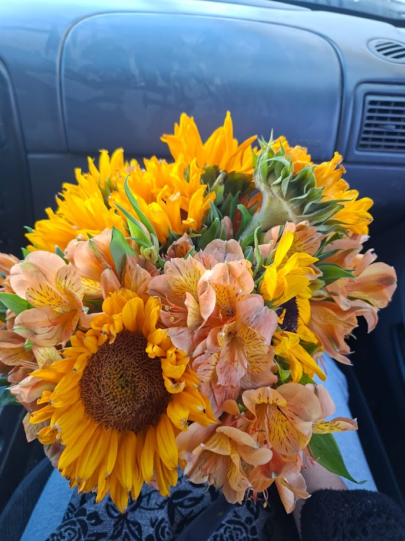
Uhh si supieras lo que tardé aksjdkas, fui como a 5 florerías y viveros buscando flores en específico pero se logró y conseguí juntarlas todas y un listón que me dio mi hermana, todavía me acuerdo los ojos que hiciste cuando lo viste. Sentí tan lindo que quise tener un jardín de flores solo para ti.
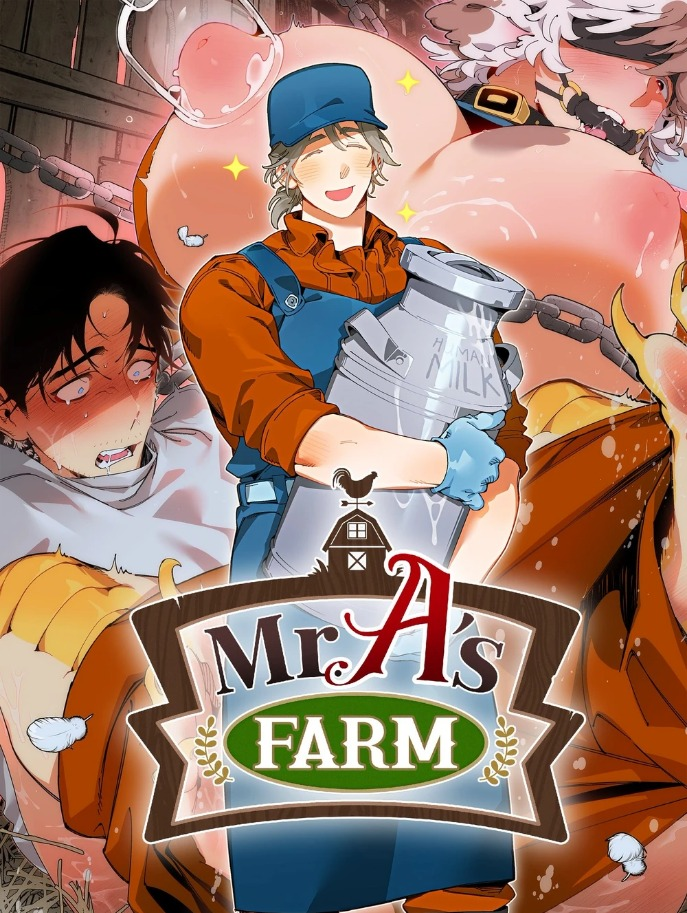
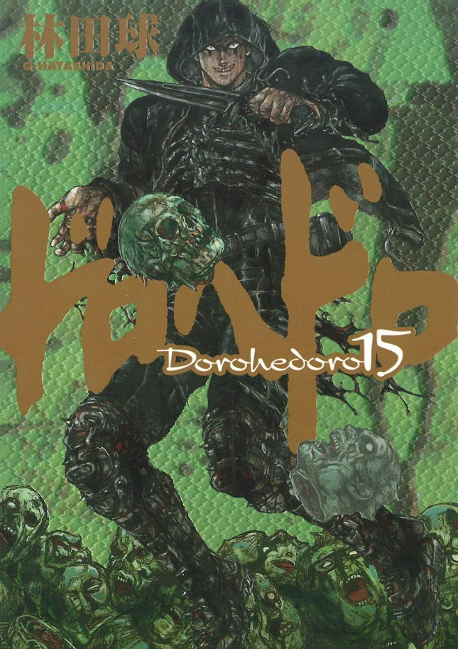
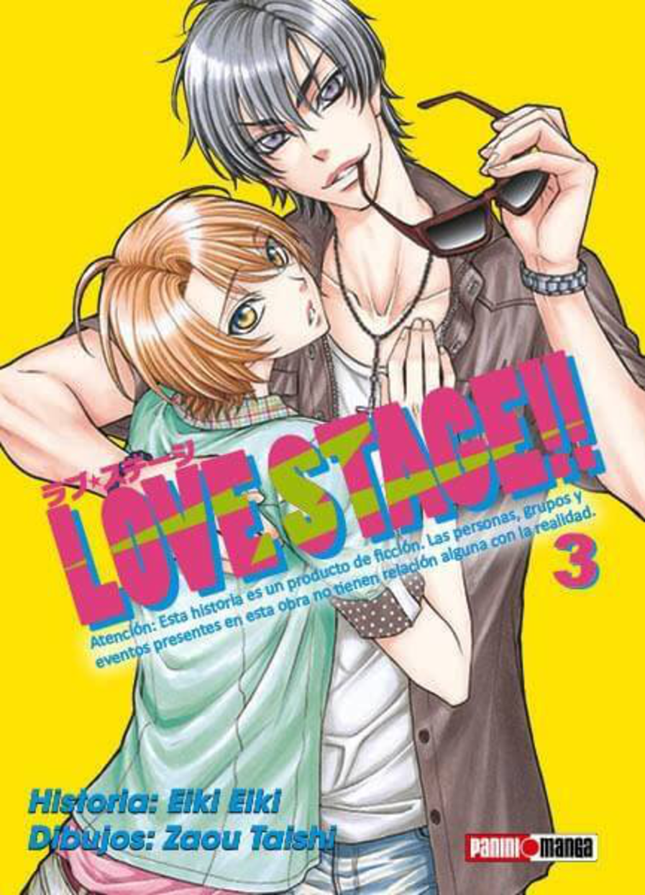
Sin comentarios con el primero bb, loveu y tus gustos raros tmb (ñom), gracias por enseñarme dorohedoro muaaa >//< y nunca he leído love stage pero dijiste que me lo prestarías algún día muaaa.
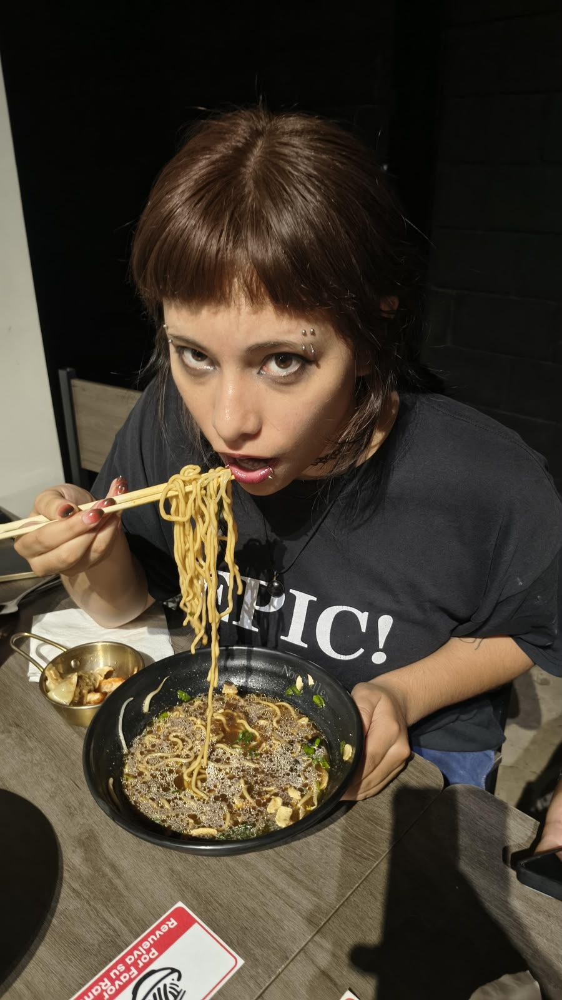
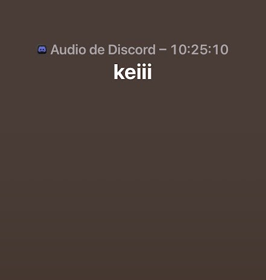
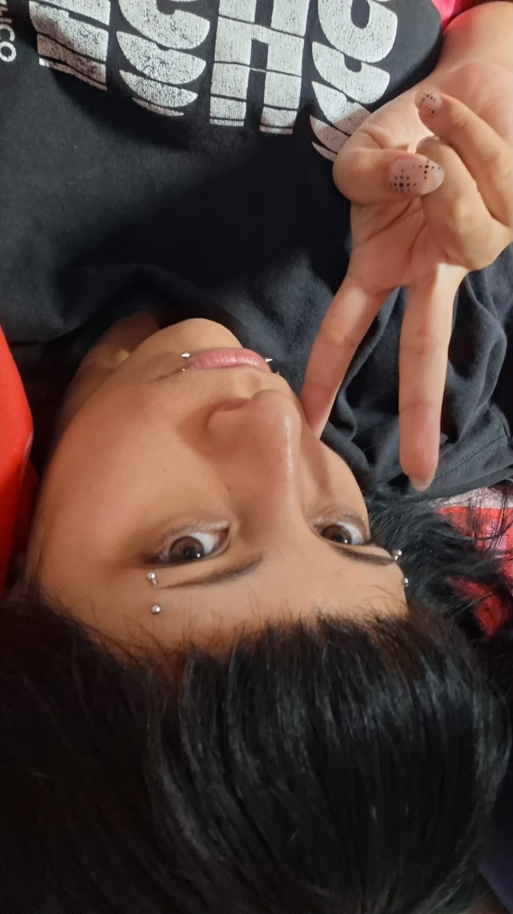
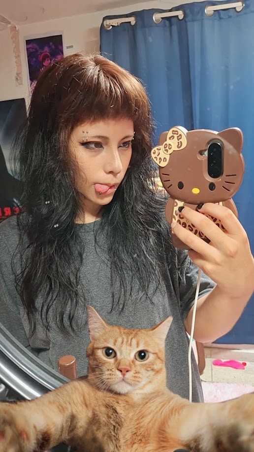
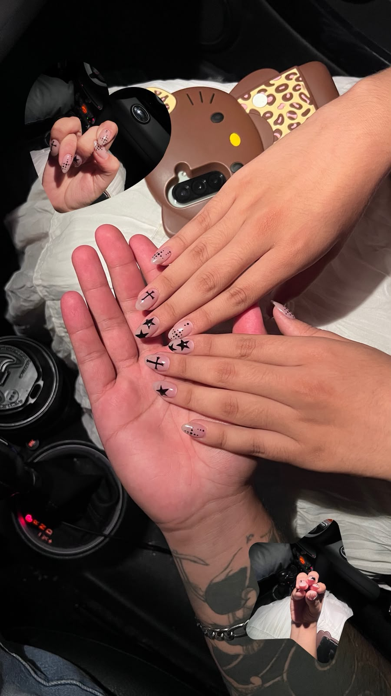
Lo que más me impresiona es verte convertir una idea en algo que se puede tocar. Aquí van mis diseños suyos favoritos.
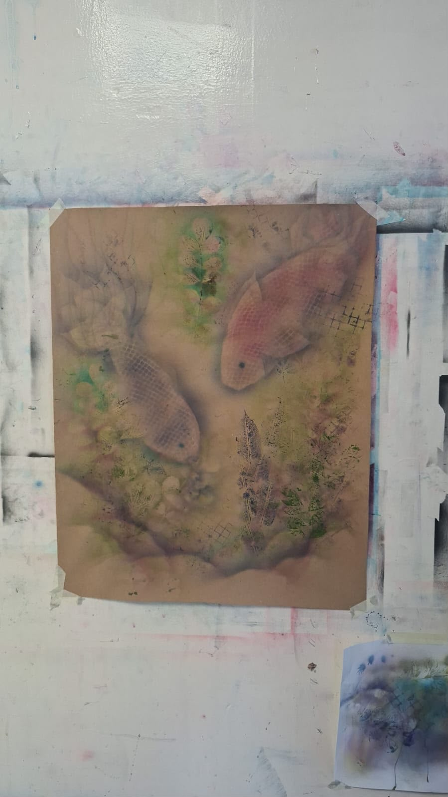
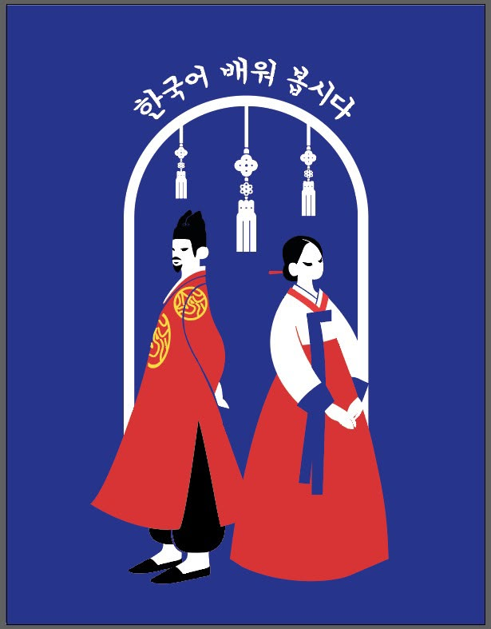
Esta página es chiquita comparada con todo lo que siento por ti :3. Por eso la dejaré abierta: la voy a seguir actualizando. MEGAAAA.